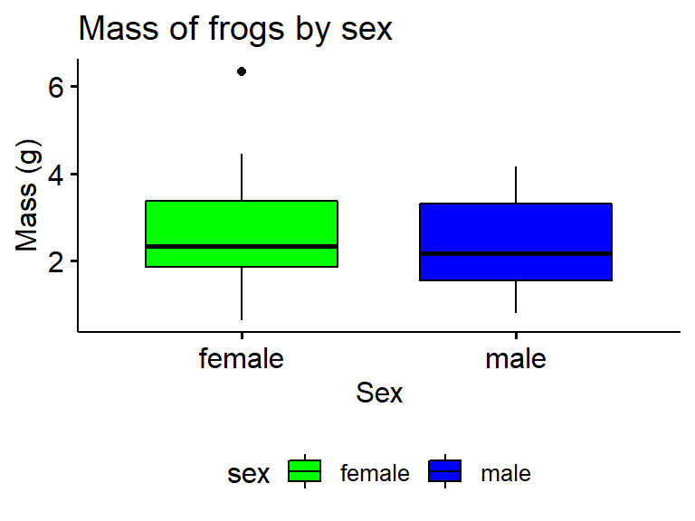
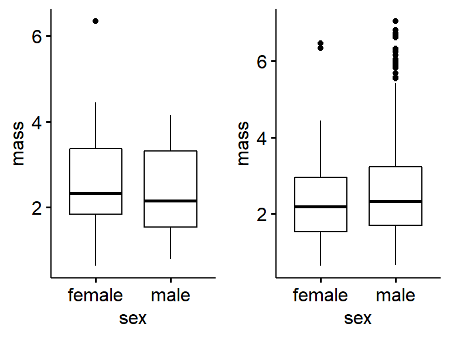
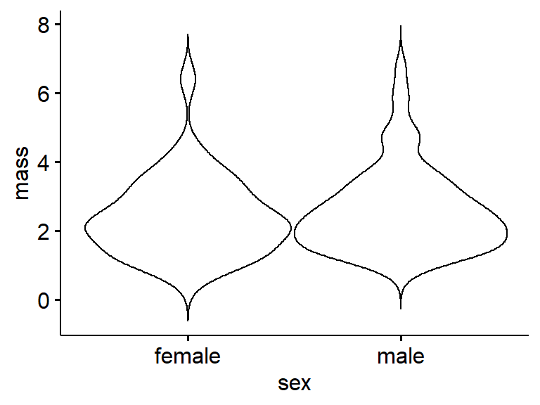
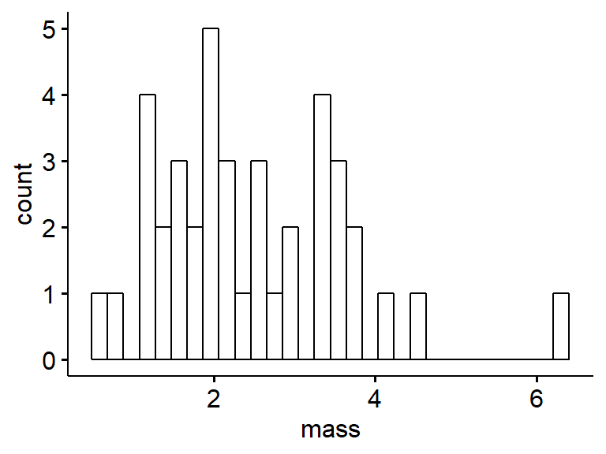
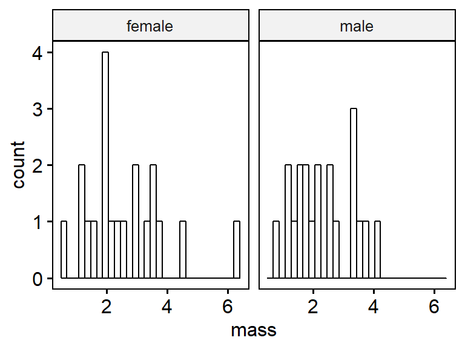

18.2 Data exploration plots
We’ll make some plots to look at the overall structure and distribution of the data.
18.2.1 Boxplots
Basic boxplot with ggpubr’s ggboxplot() function. Note that “mass” and “sex” are in quotes.
ggboxplot(data = my.frogs, # the data frame
y = "mass", # y-axis: a continous variable
x = "sex") # x-axis: a group
18.2.2 Notched boxplot
We’ll use the original frogarms dataframe first for this These aren’t commonly used; the notches work kind of like confidence intervals to determine if medians are different.
ggboxplot(data = frogarms,
y = "mass",
x = "sex",
notch = TRUE) 
Now try your own subset of the data. The Notch calculations likely get messed up with small samples sizes. R will likely give you several warnings in red.
ggboxplot(data = my.frogs,
y = "mass",
x = "sex",
notch = TRUE)
18.2.3 Filled boxplots
Add colored fill; note that it is “fill” not “color”. (Color changes the color of the lines).
ggboxplot(data = my.frogs,
y = "mass",
x = "sex",
notch = TRUE,
fill = "sex")We can turn off the notching by adding a “#” character before it. This is called “commenting out” that line of code
ggboxplot(data = my.frogs,
y = "mass",
x = "sex",
#notch = TRUE,
fill = "sex")18.2.4 Boxplots with raw data
Add raw data This works best with small datasts
ggboxplot(data = my.frogs,
y = "mass",
x = "sex",
#notch = TRUE,
fill = "sex",
add = "point")
18.2.5 Boxplots with jittered raw data
This can be helpfuj, though ggpubr::ggboxplot doesn’t allow much control over the “jittering”. Jittering is helpful when you have large datsets and want to avoid overlap in the points.
ggboxplot(data = my.frogs,
y = "mass",
x = "sex",
fill = "sex",
add = "jitter")
18.2.6 OPTIONAL: Jittering with ggplot2
The following section is opptionall
ggpubr helps simplify ggplot2 code, but in doing so adds some constraitns. You can combine ggpubr commands with regular ggplot2 code though. We’ll use the code we did above and also add “+ geom_jitter()”
This code should produce a plot simliar to the one above. Note that after " fill = “sex”) " there is a “+”, ( eg, " fill = “sex”) + " ) and that on the next line is " geom_jitter()"
ggboxplot(data = my.frogs,
y = "mass",
x = "sex",
fill = "sex") + #need the plus!
geom_jitter()We can make the jittering less extreme by adding “width = 0.1” wihtin geom_jitter()
ggboxplot(data = my.frogs,
y = "mass",
x = "sex",
fill = "sex") + #need the plus!
geom_jitter(width = 0.1)**End optional section
18.2.7 Label ggpubr axes
A graph isn’t done until it has labels. This can get annoying in base R graphics and ggplot2, but is easy in ggpubr.
18.2.7.1 Axes lables
Adding “xlab = …” and “ylab = …” adds axes lables. Always add units (eg “g” for grams) when applicable.
ggboxplot(data = my.frogs,
y = "mass",
x = "sex",
fill = "sex",
xlab = "Sex", #x axis (horizontal)
ylab = "Mass (g)") #y axis (vertical)
18.2.7.2 Plot title
The command “main = …” adds a main title at the top of the graph. This is not usually done for publication but useful for keeping track of things and for presentations.
ggboxplot(data = my.frogs,
y = "mass",
x = "sex",
fill = "sex",
add = "jitter",
xlab = "Sex",
ylab = "Mass (g)",
main = "Mass of Australian frogs by sex") #Main title18.2.7.3 Refining ggpubr pltos
Move the legend to the bottom.
ggboxplot(data = my.frogs,
y = "mass",
x = "sex",
fill = "sex",
xlab = "Sex",
ylab = "Mass (g)",
main = "Mass of frogs by sex", # main title
legend = "bottom") # location of legend
Change the color pallete
ggboxplot(data = my.frogs,
y = "mass",
x = "sex",
fill = "sex",
xlab = "Sex",
ylab = "Mass (g)",
main = "Mass of frogs by sex",
legend = "bottom",
palette = c("green","blue")) # change pallete
18.2.8 Plotting multple plots with cowplot::plot_grid
We can save a plot to an R object. I will use the assignment operation (<-) to assign the output of ggboxplot() to an object called “gg.my.frogs”. Note that here I am using my.frogs.
gg.my.frogs <- ggboxplot(data = my.frogs,
y = "mass",
x = "sex")Note that the code runs but nothing happens…
I can call just the object (eg, just type it into the console. or highlight jsut the word)
gg.my.frogs
Now, Make an object using the full frogarms data
gg.frogarms <- ggboxplot(data = frogarms, #use original data
y = "mass",
x = "sex")Now plot both using the plot_grid() function from the handy cowplot package.
plot_grid(gg.my.frogs,
gg.frogarms)
Add labels. Note that alignment is off sometimes.
plot_grid(gg.my.frogs,
gg.frogarms,
labels = c("a)My fogs","b)All the frogs"))18.2.9 Optional: Histograms
The following is optional
Histograms are excellent for data exploration. They generally work best qwith medium to large datasets.
A basic histogram can be made using gghistogram(). NOte that there is “x = …” but no “y = …”; the y-axis is computed by the graphing function.
gghistogram(data = my.frogs,
x = "mass")
A key concept for ggplot is “faceting.” Faceting occuring when a two panels of plots are made from a single dataset, and the panels are split by a categorical variable. We can add “faet.by = sex” to make two panels, one for female and one for male. Note that because there are only 10 frogs in each group, the graphs aren’t very useful.
gghistogram(data = my.frogs,
x = "mass",
facet.by = "sex")
Just as we did for histograms we can change the fill, add a title, etc.
